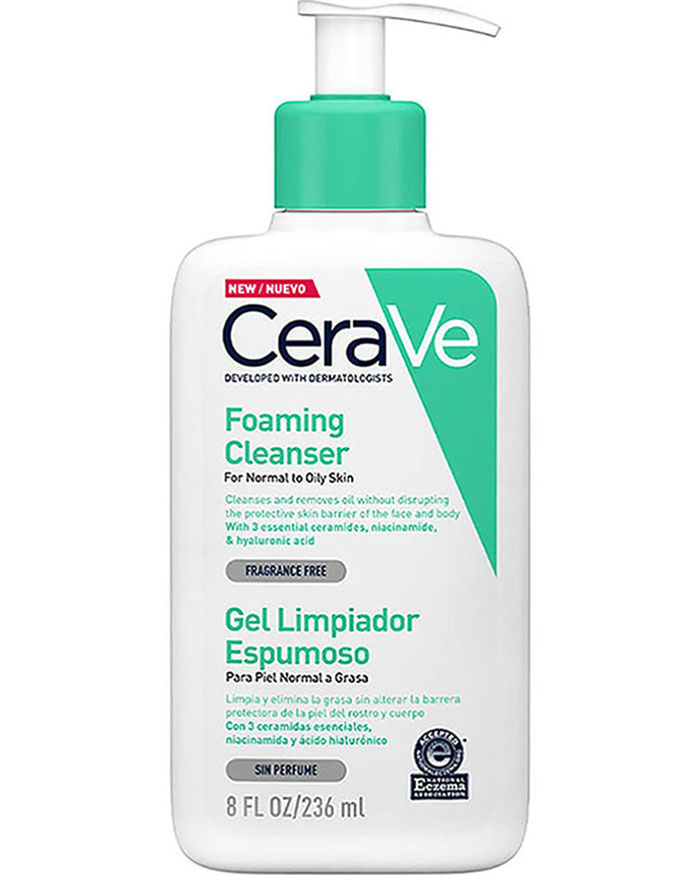
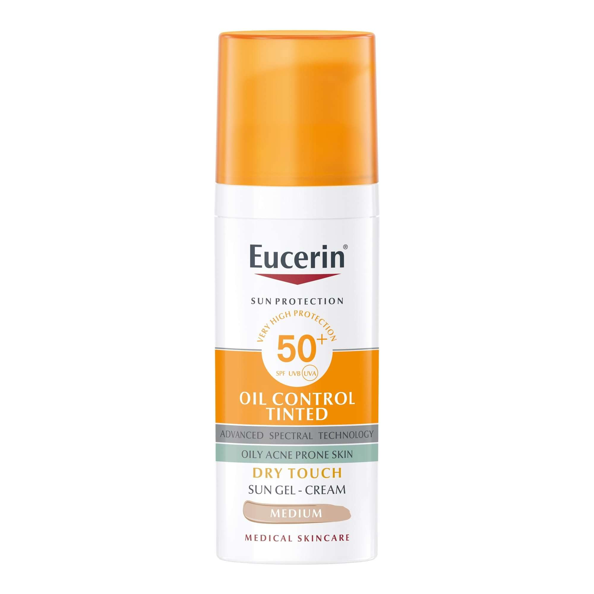
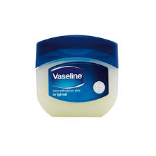

Cuidado de piel
Para tratar con tu piel antes de la consulta, debes:
Detectar qué tipo de piel tienes
Consultar con tu dermatólogo de confianza qué productos no son dañinos para tu piel
Sacar turno con una semana de antelación
No utilizar productos más allá de hidratante y protector solar antes de la consulta
| Producto |
Imagen |
| Limpiador facial |
 |
| Crema hidratante |
|
| Protector solar |
 |
| Humectante de labios |
 |